LLM Applications & Workflows
- hw08 #FIXME:URL
Links
Prompt Engineering Guides
- Anthropic: docs.anthropic.com/en/docs/build-with-claude/prompt-engineering
- OpenAI: platform.openai.com/docs/guides/prompt-engineering
- OpenAI examples: platform.openai.com/docs/examples
Frameworks
- OpenAI Agents SDK — primary framework
- OpenAI Agents SDK docs
- OpenAI Agent Builder — visual workflow builder
- OpenAI Agents guide
- LangChain — chains and agents
- LangGraph — stateful agent graphs
abe_froman— human-readable custom workflow example (LangGraph)- AutoGen — multi-agent conversations
- smolagents — lightweight agents
- AI SDK — TypeScript web-integrated agents
MCP
Self-Hosting & Tools
- Ollama — desktop model hosting
- PocketPal — mobile model hosting
- IBM Granite 4.0 — efficient open models
- OpenAI open-source models
Healthcare AI
- UCSF Versa — institutional LLM tool (sunsetting soon)
- UCSF ChatGPT Enterprise — Versa replacement (coming online March 2026)
- Suki AI — clinical AI assistant
- Google Med-PaLM — medical LLM research
Developer Tools
- Claude Code — CLI-based agentic coding
- Cursor — AI-powered editor
- OpenAI Codex — code generation
Cookbooks & Guides
- Fighting With AI — practical guide to failure modes, prompt engineering, and guardrails for AI coding tools
- Anthropic Cookbook
- OpenAI Cookbook
- OpenAI Evals — evaluation framework
Workflow Orchestrators
Papers
- Apple “Illusion of Thinking” — LLM reasoning limitations
- GPT (2018)
- RLHF — Reinforcement Learning from Human Feedback
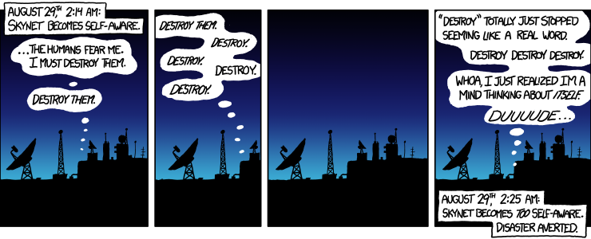
When to Use LLMs
Before diving into agents, RAG, and workflows — the most important skill is knowing when to use LLMs and when not to.
Good Fits for LLMs
- Text summarization and transformation: Condense documents while preserving key information
- Structured data extraction: Convert unstructured text to structured formats (JSON, tables)
- Content classification: Categorize by type, topic, sentiment
- Question answering over documents: Answer questions based on provided context
- Draft generation with review: First drafts that humans refine
Poor Fits for LLMs
Conversely, some tasks look like they should work but consistently produce poor results:
- Precise calculations: Use tools (calculators, code) instead
- Factual retrieval without verification: LLMs may hallucinate
- Real-time data without external connection: Models have knowledge cutoffs
- High-stakes autonomous decisions: Require human oversight
- Deterministic logic: Use rule engines instead
Reference Card: LLM Decision Framework
| Question | Yes → | No → |
|---|---|---|
| Can you describe the task clearly? | Good candidate | Clarify requirements first |
| Are errors catchable? | Proceed with validation | Add human review or avoid |
| Can you validate outputs? | Automate with checks | Use expert oversight |
| Do you have domain expertise to evaluate? | LLM amplifies your skill | Risk of undetected errors |
Common Failure Modes
!!! warning If you don’t know how to do something yourself, you won’t know if an LLM is doing it well. LLMs amplify expertise — they don’t replace it.
Understanding how LLMs fail helps you design better systems and set appropriate expectations. Fighting With AI covers these patterns in depth with actionable mitigation strategies.
Reference Card: Failure Modes & Mitigations
| Failure Mode | What Happens | Mitigation |
|---|---|---|
| Hallucinations | Fabricated citations, confident incorrect answers | RAG, fact-checking, citations, temperature=0, training data curation |
| Prompt injection | User input overrides system instructions | Input sanitization, delimiters, XML tags |
| Inconsistency | Same input → different outputs | temperature=0, seeded states, validation |
| Math errors | Arithmetic fails silently, especially multi-step unit conversions | Tool use (not guaranteed); or LLM extracts values, Python computes |
| Context overflow | Important information at edges gets lost | Strategic positioning, chunking, hierarchical summarization |
| Task/expertise mismatch | User can’t identify LLM errors | Expert review, reference materials, limit autonomy |
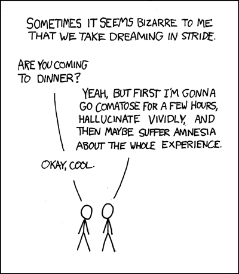
Prompt Injection
Models may treat user content as instructions. The defense: separate system instructions from user content using roles and delimiters (XML tags like <user_input>...</user_input>). Guardrails (covered in Workflows below) validate both inputs and outputs.
Math Errors
LLMs approximate numbers through pattern matching — they don’t execute arithmetic. Multi-step calculations with unit conversions (e.g., mcg/kg/min → mL/hr) fail more often than simple ones. Never rely on LLM arithmetic for critical values — use the LLM to extract values, then compute with Python. We’ll see code for this in the Deterministic Steps pattern below.
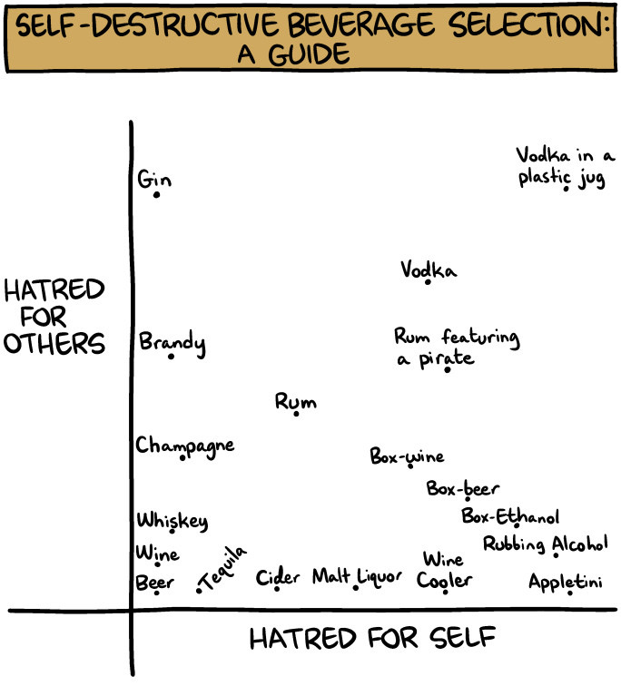
Practical Recommendations
Start Small
Every major provider offers a model hierarchy — start with the smallest model that handles your task and only upgrade when needed. Each tier is roughly 5–10x cheaper than the one above it:
- OpenAI: GPT-X.2 → GPT-X-mini → GPT-X-nano
- Anthropic: Claude Opus → Claude Sonnet → Claude Haiku
- Google: Gemini Pro → Gemini Flash → Gemini Flash Lite
Self-hosted options (free, private): Ollama (desktop) and PocketPal (mobile) let you run models locally — no API costs, no usage limits, ideal for sensitive data prototyping.
Testing & Validation
Start simple:
- Test on 5–10 representative examples first
- Manually review outputs
- Try edge cases (missing data, unusual formats)
- Incorporate failures into few-shot examples
Red flags to watch for:
- Inconsistent outputs for similar inputs
- Made-up citations or facts
- Missing required information
- Wrong format or structure
Choose tasks that you can meaningfully oversee. Think of LLMs as prolific interns — productive but requiring supervision.
Reference Card: Getting Started Checklist
| Step | Action |
|---|---|
| 1. Prototype | Use a mini/nano model (gpt-5-mini, Claude Haiku, Gemini Flash) |
| 2. Test | Run 5–10 representative examples, manually review outputs |
| 3. Edge cases | Try missing data, unusual formats, adversarial inputs |
| 4. Iterate | Incorporate failures into few-shot examples or guardrails |
| 5. Upgrade | Switch to a larger model only if the smaller one can’t handle it |
| 6. Monitor | Track costs, latency, and output quality in production |
Agentic LLMs
You can send a prompt and get a response. Now: what can you build with it?
An agent is an LLM that can take actions — not just generate text, but use tools, gather information, and iterate toward a goal. When Claude Code reads your files, decides what to edit, runs tests, and loops until the bug is fixed — that’s an agent. When ChatGPT searches the web, reads results, and synthesizes an answer — that’s an agent too.
The key difference from a chatbot: an agent has a goal and takes actions to achieve it. It decides what to do next based on what it observes, rather than waiting for you to tell it each step. This autonomy is what makes agents powerful — and what makes them tricky to get right.
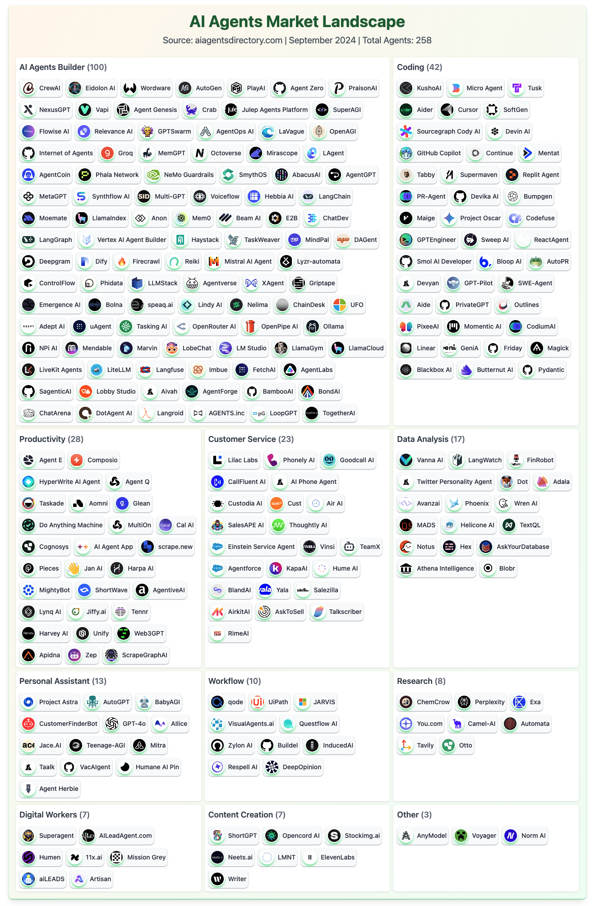
Traditional vs Agentic LLM Use
| Traditional | Agentic |
|---|---|
| Single request → single response | Multi-turn, self-guided iterations |
| User provides all context | Agent gathers information as needed |
| Fixed output | Iterates until task complete |
| No tool access | Can invoke external functions |
Key Characteristics of Agents
- Autonomy: Agent decides next steps based on observations
- Tool use: Can invoke external functions (search, database queries, calculators)
- Iteration: Loops until task complete or max steps reached
- State management: Maintains context across multiple actions
The Agent Loop
Plan → Act → Observe → Reflect → (repeat)This loop naturally extends chain-of-thought reasoning — instead of reasoning in a single generation, the agent reasons across multiple steps, each grounded in real observations rather than generated all at once.
Here’s what that looks like for a real task:
Task: "Find recent papers on treatment X and summarize findings"
↓
1. Agent searches literature database (tool call)
↓
2. Agent reads top 3 papers (tool call)
↓
3. Agent synthesizes findings
↓
4. Agent checks if answer is complete
↓
If not → searches for more specific info
↓
5. Returns final summaryReference Card: Agent Components
| Component | Purpose |
|---|---|
| Planner | Breaks task into steps |
| Memory | Stores conversation history and intermediate results |
| Tools | External functions the agent can call |
| Executor | Runs tools and collects results |
| Reflector | Evaluates progress, decides whether to continue or return |
Code Snippet: Simple Agent Loop
This is what’s happening under the hood when tools like Claude Code or ChatGPT work on multi-step tasks:
from openai import OpenAI
client = OpenAI()
def agent_loop(task, tools, max_steps=10):
messages = [{"role": "user", "content": task}]
for step in range(max_steps):
# PLAN/ACT: send conversation so far, let the model decide what to do
response = client.chat.completions.create(
model="gpt-5.2", messages=messages, tools=tools
)
reply = response.choices[0].message
messages.append(reply)
# DONE? if the model didn't ask to call any tools, it's finished
if not reply.tool_calls:
return reply.content
# OBSERVE: execute each tool the model requested, feed results back
for call in reply.tool_calls:
result = run_tool(call)
messages.append({"role": "tool", "tool_call_id": call.id,
"content": str(result)})
# loop back → model sees the tool results and decides next step
return "Max steps reached"Building an Agent
You’ve seen the concepts — now here’s what defining an agent looks like in code. The OpenAI Agents SDK wraps the agent loop, tool dispatch, and message management into a clean API:
Code Snippet: OpenAI Agents SDK
# pip install openai-agents pydantic
from pydantic import BaseModel
from agents import Agent, Runner, function_tool, set_default_openai_client
from openai import OpenAI
# Point the SDK at any OpenAI-compatible API (OpenRouter, local Ollama, etc.)
set_default_openai_client(OpenAI(base_url="https://openrouter.ai/api/v1"))
@function_tool
def calculate_bmi(weight_kg: float, height_m: float) -> str:
"""Calculate BMI from weight and height."""
bmi = weight_kg / (height_m ** 2)
return f"BMI: {bmi:.1f}"
# Structured output — agent must return data matching this schema
class PatientReport(BaseModel):
bmi: float
category: str
recommendation: str
agent = Agent(
name="Health Assistant",
instructions="You help with health data analysis. Use tools for calculations.",
tools=[calculate_bmi],
output_type=PatientReport, # forces structured JSON output
)
# max_turns limits how many agent loop iterations (tool calls) before stopping
result = Runner.run_sync(agent, "Calculate BMI for a 75kg patient who is 1.75m tall",
max_turns=10)
print(result.final_output) # PatientReport objectThe SDK handles the agent loop automatically — you define tools, instructions, and the agent figures out the rest. Key parameters:
output_type: Forces the agent to return structured data matching a Pydantic model — the same pattern you saw with schema-based prompting in Lecture 7, but now enforced by the framework.max_turns: Limits how many iterations the agent loop can run. Without it, an agent could loop indefinitely if it keeps calling tools. Set it based on task complexity — simple tasks need 5–10 turns, complex investigations might need 30–50.set_default_openai_client: Points the SDK at any OpenAI-compatible API endpoint (OpenRouter, a local Ollama server, etc.) instead of the default OpenAI API.
More framework options in the Workflow section below.
Prompting Techniques for Agents
In Lecture 7 you learned chain-of-thought and prompt chaining. Agents extend these with patterns designed for multi-step, tool-using workflows:
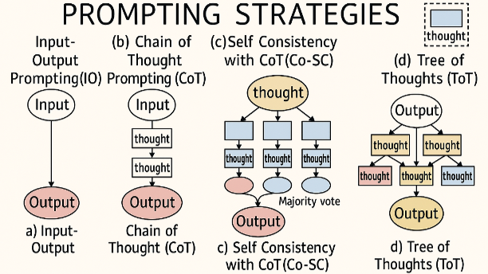
Reference Card: Agentic Prompting Patterns
| Pattern | How It Works | When to Use |
|---|---|---|
| ReAct (Reason+Act) | Interleave reasoning with tool calls: think → act → observe → think again | Any agent that uses tools — the default agent pattern |
| Self-consistency | Generate multiple reasoning paths, vote on the most common answer | High-stakes decisions where confidence matters |
| Reflection | Agent critiques its own output, surfaces uncertainty and assumptions | Complex tasks where errors are costly |
| Tree of Thought | Explore multiple solution branches, prune unpromising paths | Planning and multi-step reasoning tasks |
!!! warning “Reasoning” in LLMs is not thinking. Models like o1/o3 use chain-of-thought at inference time, which can improve results on some tasks — but it doesn’t always help, it’s always more expensive, and it can create a false sense of confidence. See Apple’s “Illusion of Thinking” research.
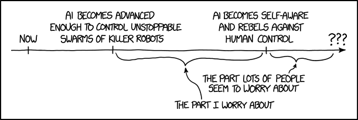
LIVE DEMO!
Retrieval-Augmented Generation (RAG)
The core problem with LLMs: they only know what was in their training data, and they’ll confidently make things up when they don’t know. RAG (Retrieval-Augmented Generation) solves this by giving the model relevant documents at query time — instead of hoping the model knows something, you look it up first and include it in the prompt.
Why RAG?
- Reduces hallucinations: Responses grounded in retrieved documents
- Provides sources: Can cite specific documents
- Keeps information current: Update documents without retraining
- Domain adaptation: Use your own documents without fine-tuning
The RAG Pipeline
The pipeline:
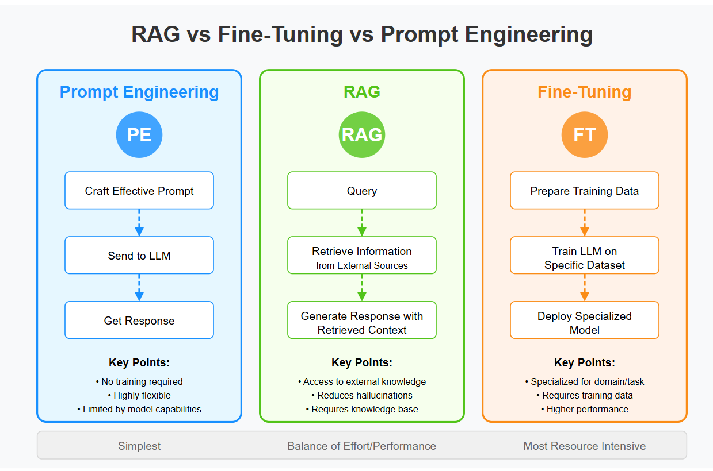
Query → Embed → Retrieve Similar Chunks → Add to Prompt → Generate ResponseReference Card: RAG Pipeline
| Component | Details |
|---|---|
| Signature | query → embed → retrieve → augment → generate |
| Purpose | Ground LLM responses in retrieved documents to reduce hallucination |
| Embed | Convert query to vector using same model as document embeddings |
| Retrieve | Find top-k similar chunks from vector store (ChromaDB, FAISS, etc.) |
| Augment | Insert retrieved chunks into system prompt as context |
| Generate | LLM produces response grounded in provided context |
Code Snippet: Simple RAG Pipeline
from sentence_transformers import SentenceTransformer
import chromadb
from openai import OpenAI
embedding_model = SentenceTransformer('all-MiniLM-L6-v2')
llm_client = OpenAI()
db = chromadb.Client()
collection = db.create_collection("docs")
def index_documents(documents):
"""Add documents to the vector store. In practice, split long documents
into chunks first (e.g., by paragraph or fixed token count)."""
embeddings = embedding_model.encode(documents).tolist()
collection.add(
documents=documents,
embeddings=embeddings,
ids=[f"doc_{i}" for i in range(len(documents))]
)
def rag_query(question, n_results=3):
"""Retrieve relevant chunks and generate a grounded response."""
query_embedding = embedding_model.encode([question]).tolist()
results = collection.query(query_embeddings=query_embedding, n_results=n_results)
context = "\n\n".join(results['documents'][0])
response = llm_client.chat.completions.create(
model="gpt-5-mini",
messages=[
{"role": "system", "content": f"Answer based on this context:\n{context}"},
{"role": "user", "content": question}
]
)
return response.choices[0].message.contentModel Context Protocol (MCP)
MCP provides a standardized way to connect LLMs to external data sources and tools. Instead of writing custom integrations for each tool, MCP offers pre-built servers that expose capabilities in a consistent format.
!!! note MCP servers often run as Node.js processes. Install Node.js (brew install node on macOS, or nodejs.org) to use them.
Why MCP?
- Standardization: Same interface for files, databases, APIs, web scraping
- Reusability: Pre-built servers for common tools (GitHub, Slack, Postgres, etc.)
- Security: Consistent authentication and permission model
- Discovery: LLMs can discover available tools dynamically
How MCP Works
┌─────────────┐ MCP Protocol ┌─────────────┐
│ LLM/Agent │ ◄───────────────► │ MCP Server │ ◄──► External Service
└─────────────┘ └─────────────┘
Your code connects here Pre-built or custom- MCP Server exposes tools and resources via a standard protocol
- Your code connects to the server and discovers available capabilities
- LLM receives tool definitions and can invoke them through your code
MCP fits naturally with agents: MCP servers are the tools that agents can call.
Function Calling
Whether you’re writing tools by hand or discovering them via MCP, the underlying mechanism is the same: function calling. You define functions using JSON schemas, and the model can invoke them. This serves two purposes:
- Tool use: The agent chooses to call external functions (search, calculate, query a database). This is what makes agents agentic.
- Structured output: You force the model to return data matching a specific schema — formatting, not action. You saw this in Lecture 7 with schema-based prompting; function calling guarantees compliance.
Both use the same API (tools parameter). Tool use is about action; structured output is about format.

Reference Card: MCP & Function Calling
| Component | Details |
|---|---|
| MCP Server | Process that exposes tools/resources (e.g., filesystem server, database server) |
| MCP Tool | Function the LLM can invoke (e.g., read_file, query_database) |
| MCP Resource | Data the LLM can read (e.g., file contents, API responses) |
| MCP Transport | How client and server communicate (stdio, HTTP) |
| Function calling definition | JSON schema with properties and types |
tool_choice |
"auto" (model decides) or forced (specific function) |
| Tool use pattern | Model chooses tool → your code executes → result fed back |
| Structured output pattern | Model forced to return data matching schema |
Code Snippet: Defining an MCP Server
An MCP server exposes Python functions as tools. The @mcp.tool() decorator + type hints are all it takes — the protocol handles schema generation, discovery, and transport:
from mcp.server.fastmcp import FastMCP
mcp = FastMCP("Health Tools")
@mcp.tool()
def calculate_bmi(weight_kg: float, height_m: float) -> str:
"""Calculate BMI from weight and height."""
bmi = weight_kg / (height_m ** 2)
return f"BMI: {bmi:.1f}"
mcp.run()Code Snippet: Configuring MCP Servers
In practice, MCP servers are configured in JSON — tools like Claude Code, Cursor, and ChatGPT read this config to connect to servers automatically:
{
"mcp": {
"servers": {
"filesystem": {
"command": "npx",
"args": ["@modelcontextprotocol/server-filesystem", "/path/to/data"]
},
"postgres": {
"command": "npx",
"args": ["@modelcontextprotocol/server-postgres", "postgresql://localhost/mydb"]
}
}
}
}Once configured, the LLM can discover and call any tools the server exposes. For example, the filesystem server exposes read_file, write_file, list_directory, and search_files — the same tools Claude Code uses to navigate your codebase.
Common MCP Servers
| Category | Server | Tools Exposed |
|---|---|---|
| File systems | @modelcontextprotocol/server-filesystem |
read_file, write_file, list_directory |
| Databases | @modelcontextprotocol/server-postgres |
query, list_tables, describe_table |
| Web | @modelcontextprotocol/server-puppeteer |
navigate, screenshot, click, fill |
| Code | @modelcontextprotocol/server-github |
Repository operations |

LIVE DEMO!!
Workflow Orchestration Patterns
An agent without a workflow is a loose cannon — powerful but unpredictable. Real tasks span multiple steps and decision points. Workflows provide structure for complex LLM applications, turning ad-hoc agent behavior into something reliable, auditable, and cost-effective.
Why Workflows?
- Reliability: Each step is simple, testable, debuggable
- Cost control: Use small models for simple steps, large models only when needed
- Auditability: Track which step failed, inspect intermediate outputs
- Safety: Add guardrails, validation, and human checkpoints
- State management: Maintain context across steps, remember decisions, handle partial failures
- Error handling: Retries, fallbacks, human-in-the-loop checkpoints
- Observability: Inspect intermediate outputs, debug chains, trace failures to specific steps
Two implementation approaches:
- Visual builders (e.g., OpenAI Agent Builder): Good for rapid prototyping and demos
- Code-first (e.g., Agents SDK, LangGraph): Better for complex logic, version control, and production systems
Pattern: Prompt Chaining
Why not put everything in one big prompt? Because each step in a chain is simpler, more testable, and produces an intermediate artifact you can inspect. If step 2 fails, you know exactly where — and you can fix that step without touching the others. Chaining also lets you use different models or temperatures per step (e.g., a cheap model for extraction, an expensive one for synthesis).
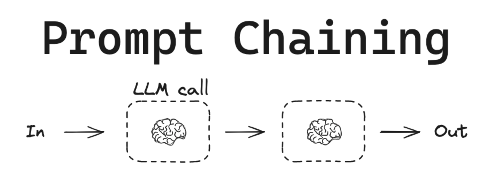
We’ll define a simple llm_call() wrapper here and reuse it throughout the rest of this lecture:
Code Snippet: Prompt Chain
from openai import OpenAI
client = OpenAI()
def llm_call(prompt: str) -> str:
"""Simple wrapper for OpenAI chat completion."""
response = client.chat.completions.create(
model="gpt-5-mini",
messages=[{"role": "user", "content": prompt}]
)
return response.choices[0].message.content
def extract_classify_summarize(document: str) -> dict:
"""Chain of LLM calls: extract → classify → summarize."""
entities = llm_call(f"Extract all medical entities from this text as a list:\n{document}")
classified = llm_call(f"Classify these entities by type (condition, medication, procedure):\n{entities}")
summary = llm_call(f"Write a brief clinical summary based on:\n{classified}")
return {"entities": entities, "classified": classified, "summary": summary}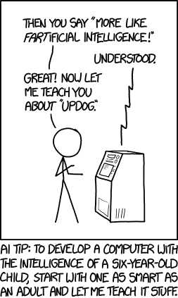
Workflow Patterns
Most agent builders represent workflows as a graph of nodes. The exact names vary by framework, but the building blocks are consistent:
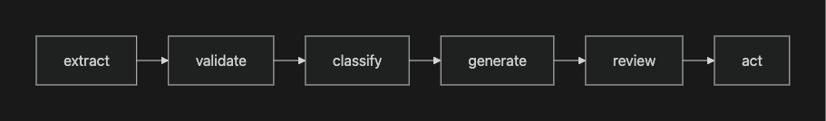
- Model call: A single LLM prompt/response step
- Tool call: Deterministic function execution (search, database, calculator)
- Router/logic: Branching based on classification or criteria
- Guardrail/validator: Check input/output for safety, schema, or quality
- Human approval: Pause for review before high-stakes actions
- Parallel fan-out: Run independent steps concurrently and merge results
Pattern: Guardrails
Concept: Input/output monitors that enforce safety and compliance rules
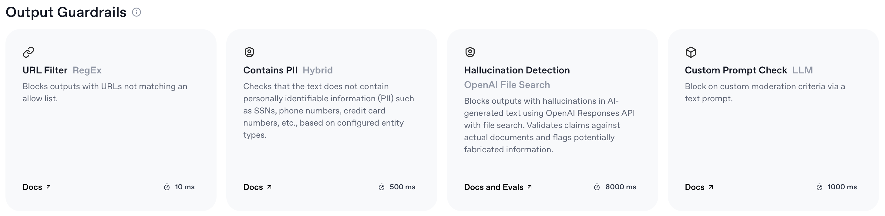
Common guardrails:
- PII/PHI detection: Flag or redact protected health information
- Hallucination detection: Check if claims are grounded in source text
- Jailbreak detection: Identify prompt injection attempts
- Format validation: Ensure structured outputs meet schema
Reference Card: Common Guardrails
| Guardrail | Purpose |
|---|---|
| PII/PHI detection | Flag or redact Protected Health Information or Personally Identifiable Information |
| Hallucination detection | Check if claims are grounded in source text |
| Jailbreak detection | Identify prompt injection attempts |
| Format validation | Ensure structured outputs meet schema |
| Content filtering | Block inappropriate content |
Code Snippet: Guardrails (Input/Output Check)
import re
def check_for_phi(text: str) -> list[str]:
"""Check for common PHI patterns. Production systems use NLP models
(e.g., Presidio, clinical NER) for more robust detection."""
patterns = {
'SSN': r'\b\d{3}-\d{2}-\d{4}\b',
'phone': r'\b\d{3}[-.]?\d{3}[-.]?\d{4}\b',
'MRN': r'\b(MRN|Medical Record)[\s:#]*\d+\b',
}
return [name for name, pat in patterns.items() if re.search(pat, text, re.IGNORECASE)]
def safe_llm_call(prompt: str) -> str:
"""Wrap llm_call() with input and output guardrails."""
if found := check_for_phi(prompt):
raise ValueError(f"PHI detected in input: {found}")
output = llm_call(prompt)
if found := check_for_phi(output):
raise ValueError(f"PHI detected in output: {found}")
return outputPattern: Routing & Logic
Concept: Conditional branching based on content or criteria
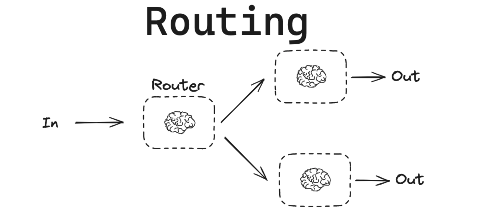
Logic nodes:
- If/else: Route based on classification or criteria
- While loops: Repeat until condition met (e.g., all sections complete)
- Human approval: Pause for review before high-stakes action
Pattern: Deterministic Steps
Concept: Integrate rule-based logic alongside LLM calls. Use LLMs for what they’re good at (language), use code for what it’s good at (math, lookups, validation).
Use cases: Known logic that does not require LLM flexibility — dose calculations, date arithmetic, database lookups, schema validation.
Code Snippet: LLM Extracts, Python Validates
import json
REQUIRED_FIELDS = {"diagnosis": str, "medications": list, "allergies": list}
def extract_and_validate(clinical_note: str) -> dict:
"""LLM extracts structured data; Python validates the result."""
raw = llm_call(f"Extract diagnosis, medications, and allergies as JSON:\n{clinical_note}")
data = json.loads(raw)
# DETERMINISTIC: Validate structure (never trust LLM output blindly)
for field, expected_type in REQUIRED_FIELDS.items():
if field not in data:
raise ValueError(f"Missing required field: {field}")
if not isinstance(data[field], expected_type):
raise TypeError(f"{field} must be {expected_type.__name__}")
return dataPattern: Parallelization
Concept: Run independent LLM tasks simultaneously
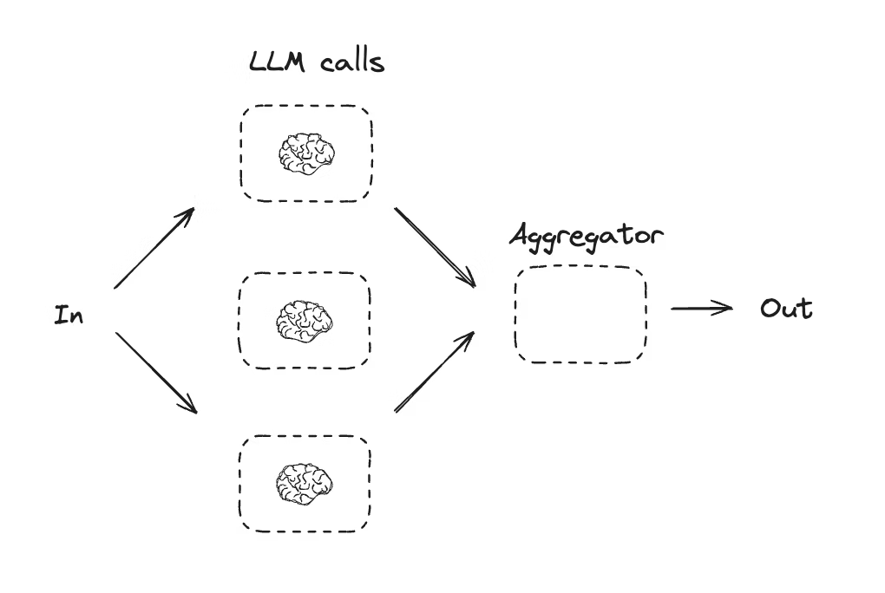
Speed:
- Divide-and-conquer: Split subtasks, execute in parallel, combine results
- First-to-finish: Start the same task with different strategies, accept the first completed
Confidence:
- Run task multiple times with different prompts or models
- Choose winner or synthesize results
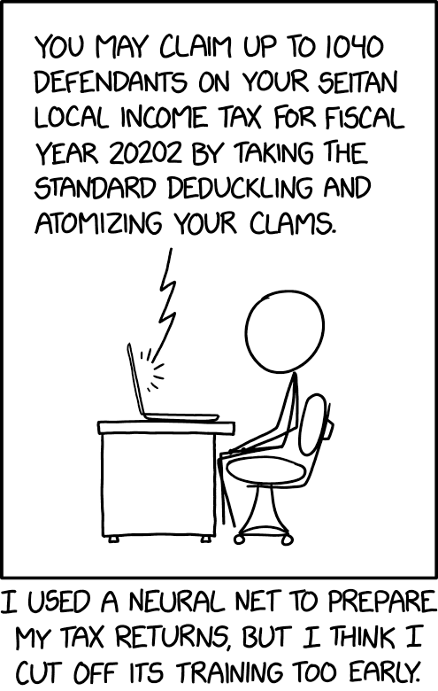
Pattern: Orchestrator-Workers
Concept: A central agent breaks a task into subtasks and delegates each to a specialist worker. The orchestrator coordinates results.
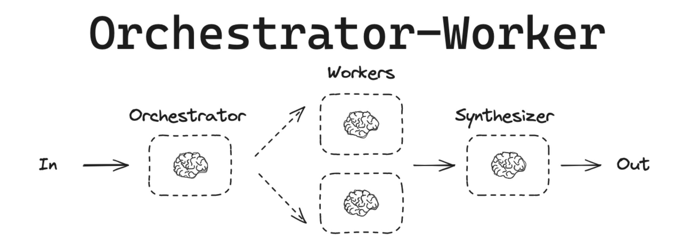
Use cases:
- Multi-section reports (each section handled by a worker)
- Medication extraction plus interaction checking plus summary generation
- Research tasks requiring multiple queries
Pattern: Evaluator-Optimizer
Concept: Generate a response, evaluate its quality (with a second LLM call or deterministic checks), then refine until it meets a threshold.
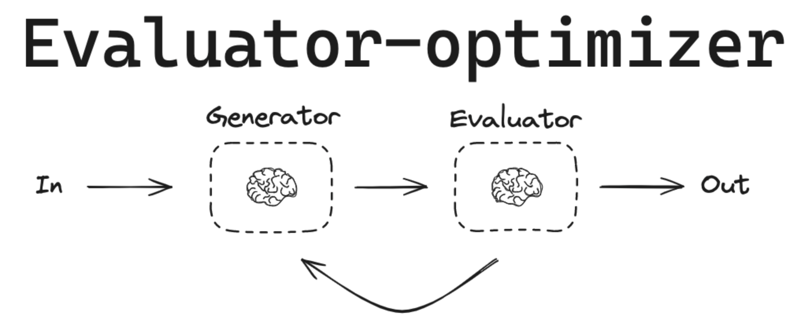
Use cases:
- Clinical note generation with completeness validation
- Extraction tasks with accuracy scoring
- Draft letters that must meet strict formatting
Pattern: Human-in-the-loop
Concept: Pause for human review before high-stakes actions. The workflow continues only after explicit approval.
Common checkpoints:
- Diagnosis confirmation
- Prescription recommendations
- Sending patient communications
Agent & Workflow Frameworks
| Framework | Focus | Notes |
|---|---|---|
| OpenAI Agents SDK | Agent building with tools, handoffs, guardrails, tracing | Primary framework for this course. Has Agent Builder GUI. |
| LangChain / LangGraph | Chains, agents, stateful graphs | Widely used, steeper learning curve. Good for custom workflows. |
| AutoGen (Microsoft) | Multi-agent conversations | Research-oriented, good for multi-agent patterns |
| smolagents (Hugging Face) | Lightweight agents | Minimal, good for quick prototyping |
Reference Card: Workflow Patterns
| Pattern | When to Use | Key Benefit |
|---|---|---|
| Prompt Chaining | Sequential multi-step processing | Each step simple and testable |
| Guardrails | Safety-critical applications | Enforce compliance rules |
| Deterministic Steps | Math, lookups, exact logic | Correctness guarantees |
| Orchestrator-Workers | Complex tasks needing specialization | Divide and conquer |
| Evaluator-Optimizer | Quality-sensitive outputs | Iterative refinement |
| Routing | Variable task types | Match task to best handler |
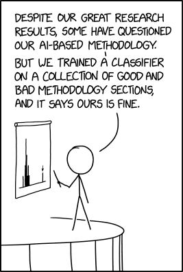
The Recurring Theme
These are bias machines. They learn from whatever data and labels we give them. Neural networks (and LLMs) absorb whatever biases exist in their training data. If we’re lucky, we might guess at the biases we introduce — but not always.
If you don’t know how to do something yourself, you won’t know if an LLM is doing it well. Domain expertise is the irreplaceable ingredient.